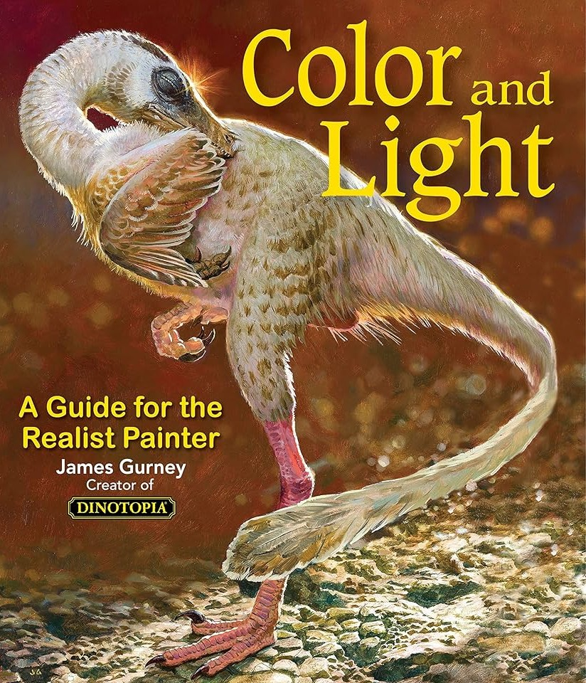

Digital Art
and the Joy of Creation
Home
About
Featured
Social Sites
Resources
Chat and Contact
Where to Learn
Pikat - Casual Art Tutorials
Watch Pikat on YouTube
Proko - Art Basics Courses (with Professionals)
Watch Proko on YouTube
SamDoesArts - Tutorials and Commentary
Watch SamDoesArts on YouTube
Color and Light
by James Gurney

Buy book on Amazon